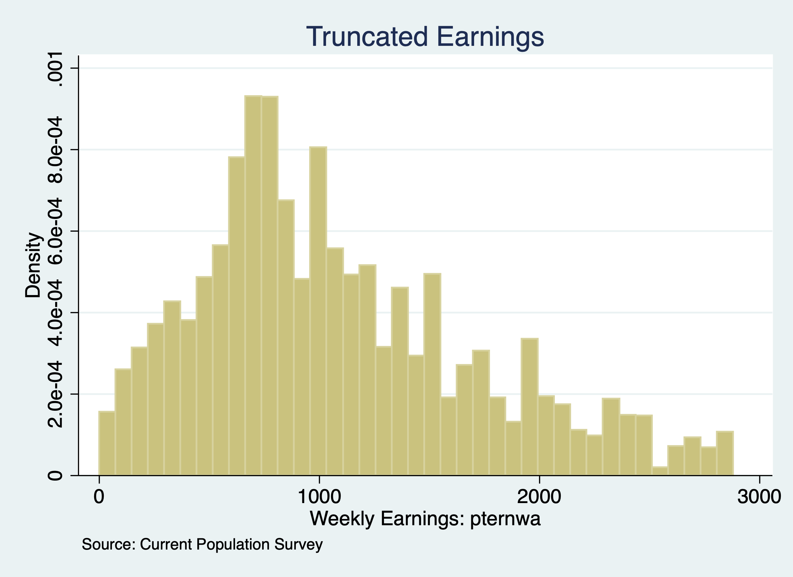

Chapter 2 Truncated Regression Models
We will again look at the Janurary 2024 Current Population Survey data. However, we will truncate the data at $2884 per week by dropping all observation at or above this threshold.
2.1 Truncated Data
We will set the threshold \(c_i \geq 2884\). Every observation at or above this threshold will be dropped.
use "/Users/Sam/Desktop/Econ 645/Data/CPS/jan2024.dta", clear
sum earnings if prerelg==1, detail
est clear
eststo OLS: quietly reg lnearnings i.edu exp expsq i.marital i.veteran i.union i.female i.race if prerelg==1
drop if earnings >= 2884
sum earnings if prerelg==1, detail Weekly Earnings: pternwa
-------------------------------------------------------------
Percentiles Smallest
1% 70 0
5% 225 0
10% 360 0 Obs 10,666
25% 656 0 Sum of Wgt. 10,666
50% 1000 Mean 1230.474
Largest Std. Dev. 788.1457
75% 1680 2884.61
90% 2692.3 2884.61 Variance 621173.7
95% 2884.61 2884.61 Skewness .7779644
99% 2884.61 2884.61 Kurtosis 2.648218
(28,566 observations deleted)
Weekly Earnings: pternwa
-------------------------------------------------------------
Percentiles Smallest
1% 62.5 0
5% 206 0
10% 336 0 Obs 9,767
25% 620 0 Sum of Wgt. 9,767
50% 960 Mean 1078.221
Largest Std. Dev. 635.0599
75% 1450 2880
90% 2000 2880 Variance 403301.1
95% 2320 2880 Skewness .7302792
99% 2780 2880 Kurtosis 2.975473Our largest value is now $2880 weekly earnings, which is just below the threshold.
Let’s look at a histogram of the truncated weekly earnings.
histogram earnings if prerelg, title("Truncated Earnings") note("Source: Current Population Survey")
graph export "/Users/Sam/Desktop/Econ 645/Data/CPS/jan2024_trunc.png", replace
We no longer have a spike in density at 2884 like we did with the censored data.2.2 Truncated Regression Models
Next, we will use the command truncreg and set the option ul() at 2884.
eststo Truncated: truncreg lnearnings i.edu exp expsq i.marital i.veteran i.union i.female i.race, ul(2884)(note: 0 obs. truncated)
Fitting full model:
Iteration 0: log likelihood = -9654.7635
Iteration 1: log likelihood = -9654.7551
Iteration 2: log likelihood = -9654.7551
Truncated regression
Limit: lower = -inf Number of obs = = 9,669
upper = 2884 Wald chi2(17) = 3276.34
Log likelihood = -9654.7551 Prob > chi2 = 0.0000
---------------------------------------------------------------------------------------------------------
lnearnings | Coef. Std. Err. z P>|z| [95% Conf. Interval]
----------------------------------------+----------------------------------------------------------------
edu |
HS/GED | .3230896 .0276751 11.67 0.000 .2688475 .3773317
AA | .4320131 .0325527 13.27 0.000 .3682109 .4958153
BS/BA | .6971765 .0297669 23.42 0.000 .6388344 .7555186
AdDegree | .8088922 .0325213 24.87 0.000 .7451517 .8726327
|
exp | .054815 .0019609 27.95 0.000 .0509716 .0586583
expsq | -.0008866 .0000319 -27.81 0.000 -.0009491 -.0008241
|
marital |
Divorced/Separated/Widowed | -.0290168 .0206418 -1.41 0.160 -.0694739 .0114404
Never Married | -.1028859 .0178986 -5.75 0.000 -.1379665 -.0678053
|
veteran |
Veteran | .0280901 .0322307 0.87 0.383 -.0350809 .0912612
|
union |
Union | .1126058 .0223161 5.05 0.000 .068867 .1563446
|
female |
Female | -.2718903 .0137518 -19.77 0.000 -.2988434 -.2449372
|
race_ethnicity |
NH Asian | -.0426197 .0795044 -0.54 0.592 -.1984454 .1132061
NH Black | -.04673 .0774491 -0.60 0.546 -.1985275 .1050674
NH Native Hawaiian or Pacific Islander | .136987 .1278521 1.07 0.284 -.1135985 .3875724
Latino/a or Hispanic | .0151638 .076424 0.20 0.843 -.1346244 .164952
NH Multiracial | .0275207 .0898433 0.31 0.759 -.148569 .2036103
NH White | .035842 .0750013 0.48 0.633 -.1111579 .1828419
|
_cons | 5.814378 .0837643 69.41 0.000 5.650203 5.978553
----------------------------------------+----------------------------------------------------------------
/sigma | .6567763 .0047229 139.06 0.000 .6475195 .6660331
---------------------------------------------------------------------------------------------------------We can directly compare our OLS and Truncated Regression Model coefficients.
(1) (2)
OLS TRM
--------------------------------------------
main
1.edu 0 0
(.) (.)
2.edu 0.330*** 0.323***
(11.77) (11.67)
3.edu 0.442*** 0.432***
(13.48) (13.27)
4.edu 0.788*** 0.697***
(26.50) (23.42)
5.edu 0.951*** 0.809***
(30.01) (24.87)
exp 0.0558*** 0.0548***
(28.73) (27.95)
expsq -0.000887*** -0.000887***
(-28.27) (-27.81)
1.marital 0 0
(.) (.)
2.marital -0.0389 -0.0290
(-1.92) (-1.41)
3.marital -0.118*** -0.103***
(-6.66) (-5.75)
0.veteran 0 0
(.) (.)
1.veteran 0.0412 0.0281
(1.34) (0.87)
0.union 0 0
(.) (.)
1.union 0.0670** 0.113***
(3.05) (5.05)
0.female 0 0
(.) (.)
1.female -0.304*** -0.272***
(-22.81) (-19.77)
1.race_eth~y 0 0
(.) (.)
2.race_eth~y 0.0325 -0.0426
(0.41) (-0.54)
3.race_eth~y -0.0466 -0.0467
(-0.60) (-0.60)
4.race_eth~y 0.135 0.137
(1.05) (1.07)
5.race_eth~y 0.0232 0.0152
(0.30) (0.20)
6.race_eth~y 0.0730 0.0275
(0.82) (0.31)
7.race_eth~y 0.0549 0.0358
(0.73) (0.48)
_cons 5.813*** 5.814***
(69.47) (69.41)
--------------------------------------------
sigma
_cons 0.657***
(139.06)
--------------------------------------------
N 10568 9669
--------------------------------------------
t statistics in parentheses
* p<0.05, ** p<0.01, *** p<0.001Interpretation: Our union wage premium is estimated to be \(((e^{0.067})-1)*100\% = 6.9\%\) with the OLS estimator, while our union wage premium is estimated to be \(((e^{0.113})-1)*100\% = 12.0\%\).
We can see that our OLS estimates are biased upwards for education and experience, but downward biased for union wage premium.
Source: https://stats.oarc.ucla.edu/stata/output/truncated-regression/